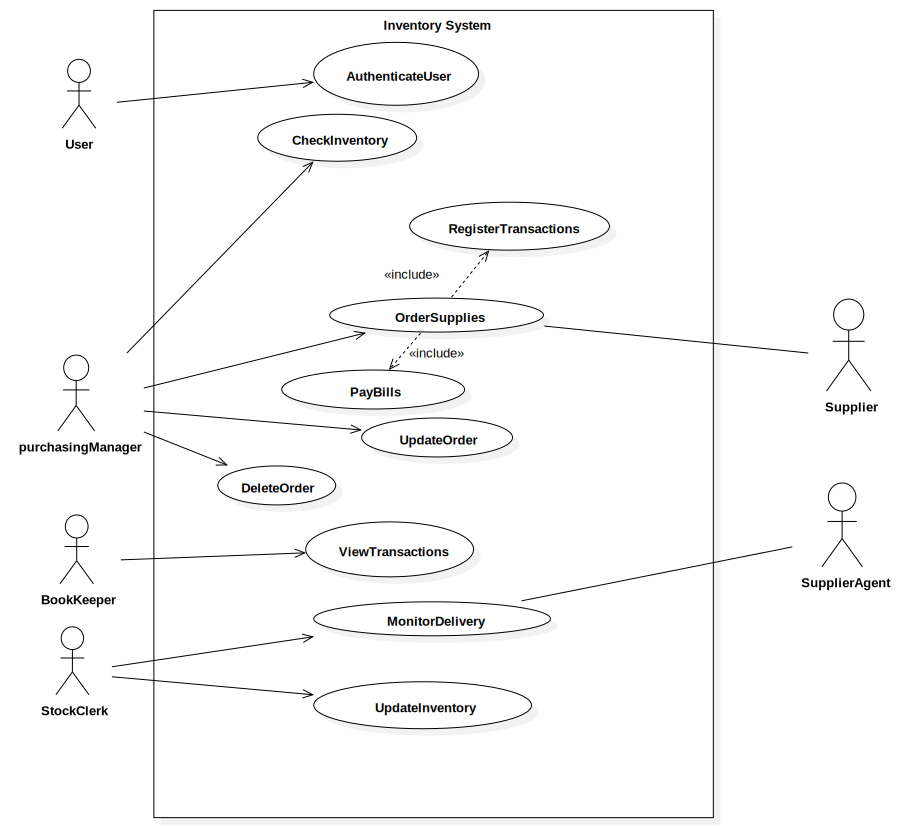

Original Inventory System
Problem Statement
- The Problem of:
- Keeping track of store inventory and finacial transactions when buying supplies
- Affects:
- PurchasingManager, Supplier, BookKeeper, SupplierAgent, StockClerk
- The impact of which is:
- Extra work, more time consumption, human errors, loss of transactions and/or supplies
- A successful solution would:
- Provide real-time transaction and product-tracking capablilites and store transaction history, show current items in the inventory
System Diagram
Casual Use Case Specifications
Scenario 1: Authenticate User
Precondition: User has been set up and already has an account created by the admin
| # | Actor (User) | System | Data Used |
|---|---|---|---|
| 1 | Enter Username and Password in the main page | Verifies if username exists and password entered is correct. |
password
userName |
| 2 | Clicks the forgot password |
Redirects to the password reset page and asks the user to enter email address. Once email address is entered, it will send an email request to reset the password |
emailAddress |
| 3 | Clicks the Submit button | Redirects to the account/dashboard page |
userName password |
Successful Post-Condition: User has logged in to the system
Scenario 2: Check Inventory
Preconditions: Purchasing Manager opens the application.
| # | Actor (PurchasingManager) | System | Data Used |
|---|---|---|---|
| 1 |
Successfully logs in with username and password |
Displays account/dashboard page for StarBuds inventory system |
password
userName |
| 2 | Select to view inventory page | Display inventory of current products | productList |
| 3 | Select item to order | Displays item name, number of item in stock, sku/code, description, price per unit |
itemName, itemInstock itemCode,unitPrice productDescription |
Successful Post-Conditions: Inventory is visible to appropriate staff.
Scenario 3: Order Supplies
Preconditions: The PurchasingManager is logged in and the system displays the order menu
| # | Actor (Purchasing Manager) | System | Data Used |
|---|---|---|---|
| 1 | Selects the Order page | Displays the list of items in stock | productList |
| Loop | |||
| 2 | Selects the item that need to be ordered | Displays the item and the number of units to order | itemName, quantity |
| 3 | Selects the number of quantity | Displays the number of quantity selected | quantity |
| 4 | Adds the items to cart | Displays the selected items, number of quantity and total price | itemName, quantity, totalPrice |
| 5 | Selects delivery method | Displays for pick-up or ship to address. If ship to address, adds a form to enter shipping address | shippingAddress |
| 6 | Select to Confirm | Sends confirmation email to the actor, redirects to successful order page,redisplays the ordered items | emailAddress, orderList |
| End Loop | |||
| 7 | Chooses to logout and exit | Clears login session, redisplays the main menu | N/A |
Successful Post-Conditions: Items ordered and confirmation email is sent to the Stock clerk
Scenario 4: Update Order
Precondition: PurchasingManager has ordered supplies that have not yet been delivered
| # | Actor (PurchasingManager) | System | Data Used |
|---|---|---|---|
| 1 | Selects the Update Order page | Displays the item and the number of units to ordered but not yet delivered | itemName, quantity |
| Loop | |||
| 2 | Selects the item whos order needs to be updated | Asks for new product quantity | Number of products |
| 3 | Submits records to the system | Asks for digital signature | Digital Signature |
| End Loop | |||
| 4 | Chooses to logout and exit | Clears login session, redisplays the main menu | N/A |
Successful Post-Condition: The orders have been updated
Scenario 5: Delete Order
Precondition: PurchasingManager has ordered supplies that have not yet been delivered
| # | Actor (PurchasingManager) | System | Data Used |
|---|---|---|---|
| 1 | Selects the Delete Order page | Displays the item and the number of units to ordered but not yet delivered | itemName, quantity |
| 2 | Select item order that needs to be canceled | Ask for user confirmation before deleting order | itemName, quantity |
| 3 | Chooses to logout and exit | Clears login session, redisplays the main menu | N/A |
Successful Post-Condition: The selected order has been deleted with the payment refunded
Scenario 5: View Transactions
Precondition: BookKeeper is logged in and is authorized to access transaction history
| # | Actor (BookKeeper) | System | Data Used |
|---|---|---|---|
| 1 | Selects the transcation history page | Display items, quantity, and payment amount for each transaction | date,itemName, quantity, payment amount, transactionType |
| 2 | Select specific transaction | Show addition information about transaction | date,itemName, quantity, transactionType, productDescription,transactionType |
| 3 | Chooses to logout and exit | Clears login session, redisplays the main menu | N/A |
Successful Post-Condition: BookKeeper is informed about all transactions that took place along with the required details
Scenario 6: Monitor Delivery
Precondition: The stock clerk has an online receipt containing the list of products purchased
| # | Actor (Stock Clerk) | System | Data Used |
|---|---|---|---|
| 1 | Checks for the product delivered | Asks for product verification code | Product verification code |
| 2 | Checks for the quantity of products delivered | Asks for product quantity | Number of products |
| 3 | Submits records to the system | Asks for signature | Signature |
| 4 | Wants a copy of the records submitted | Grants print permissions | Number of copies |
Successful Post-Condition: the products delivered has been carefully monitored
Scenario 7: Update Inventory
Precondition: Stock clerk has monitored the products delivered
| # | Actor (Stock Clerk) | System | Data Used |
|---|---|---|---|
| 1 | Successfully logs in with username and password | Displays account/dashboard page for StarBuds inventory system | Username, password |
| Loop | |||
| 2 | Select to view inventory page | Displays inventory of current products | productList |
| 3 | Selects the item that needs to be updated or add new item to inventory | Displays the item and the number of units to update | itemName, quantity |
| 4 | Selects the number of quantity | Displays the number of quantity selected | quantity |
| 5 | Select to Confirm | Send the updated quantity and item to the system’s database | Item List, quantity |
| End Loop | |||
| 6 | Chooses to logout and exit | Clears login session, redisplays the main menu | N/A |